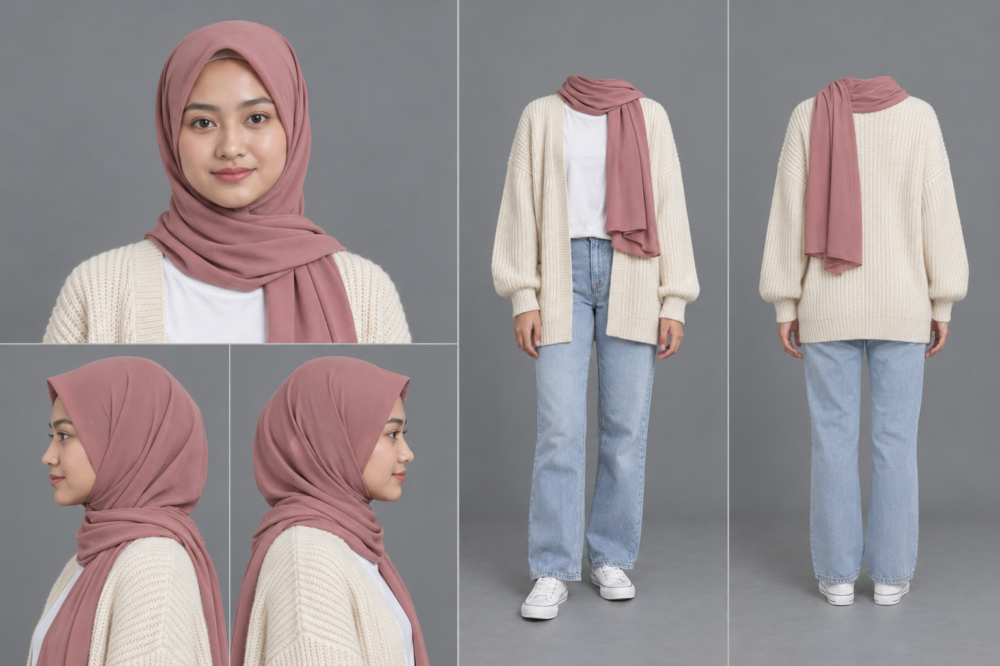
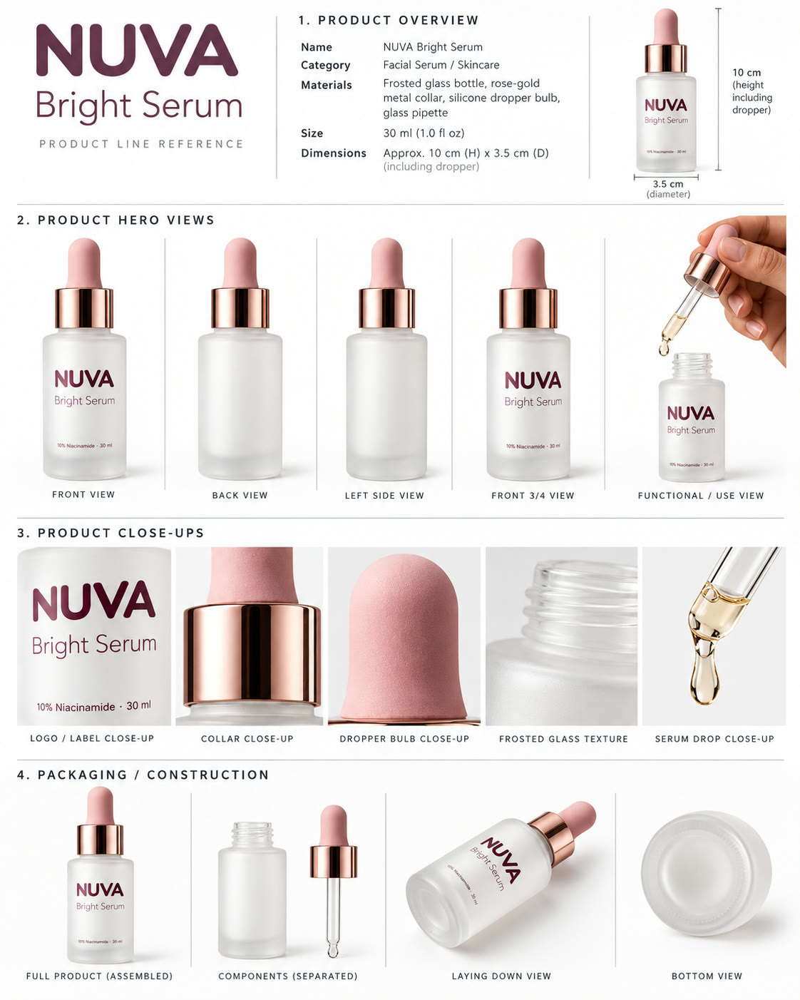
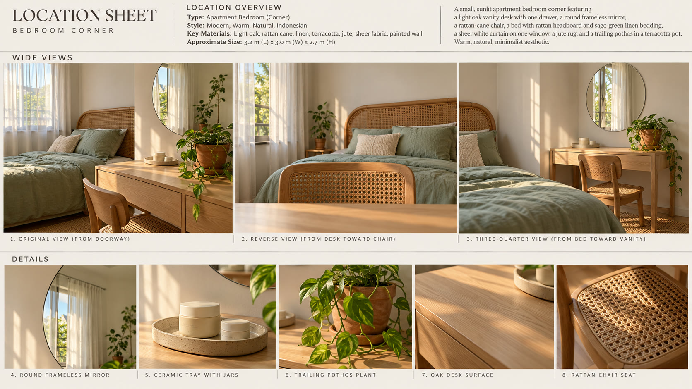

Pipeline otomatis di workstation Windows kita: masukkan produk, referensi, dan topik — hasilnya iklan UGC 9:16 siap tayang dalam Bahasa Indonesia dan Inggris.

01
Kesepakatan dengan klien
Klien kasih tiga hal. Kita kasih balik iklan siap posting.
Input
Aset — foto produk (label terbaca), aturan brand, klaim yang boleh dipakai
Referensi — iklan atau gaya kreator yang mereka suka (kita bedah per shot)
Tema / topik — sudut cerita: masalah, promo, launching, rutinitas
Output, selalu
20–30 detik, 9:16, 1080p, caption di area aman
Kreator dan produk yang sama di setiap shot (tidak berubah-ubah)
Versi ID + EN dari satu set aset; label AI lewat fitur platform
Klaim aman BPOM; loudness sesuai standar platform (−14 LUFS)
Logo kampanye AI di pojok + end card 2 detik
02
Contoh · dibuat end-to-end hari ini
Bahasa Indonesia
English
“NUVA Bright Serum” brand fiktif, skincare
Kreator
“Sari”, persona sintetis #01
Struktur
hook → masalah → demo → tekstur → hasil → CTA
Waktu render
~13 menit per klip 25 detik (720p, ID & EN paralel)
Waktu manusia
3 approval: naskah, sheet, final
03
Alur kerja
Tujuh tahap. Manusia pegang tiga titik approval; agent menjalankan sisanya.
00
Intake
Aset, referensi, topik, klaim yang boleh, bahasa, platform.
Persona, produk, lokasi: anchor → sheet multi-angle (metode Dan Kieft).
Agent → approval PM
03
Shot kit
Prompt builder menulis satu kit per bahasa: urutan referensi tetap + shot terjadwal.
Agent
04
Generate
Reference-to-video dengan suara & lip-sync bawaan. Varian jalan paralel.
Agent
05
Finishing
Caption per kata, loudness, cek area aman, logo + end card.
Agent
06
QA & kirim
Grid frame, cek label/tangan/bibir, transkrip vs naskah, re-take per shot bila salah ucap.
Agent → approval PM
Orkestrasi: satu agent utama merencanakan, generate, dan mereview; sub-agent paralel mengerjakan riset, render varian, dan QA. Setiap tahap menyimpan file di satu folder proyek, jadi tiap langkah bisa diulang sendiri.
04
Tahap 02 · kenapa hasilnya konsisten
Kunci kreator, produk, dan ruangan sebelum satu frame video pun dibuat.

Sheet persona · wajah + badan

Bible produk · label terkunci

Lokasi · termasuk sudut balik
05
Model yang kita butuhkan
Stack yang kita pakai untuk tiap jenis shot.
Pekerjaan
Model
Sheet & still
gpt-image-2
Kreator bicara + suara
Wan 3.0 ref-to-video, audio & lip-sync bawaan
B-roll produk & tangan
Wan 3.0 (render yang sama)
Caption & finishing
faster-whisper + ffmpeg (lokal)
Dicoret: Sora 2 (API ditutup 24 Sep 2026). Belum ada vendor yang menjamin kualitas lip-sync Bahasa Indonesia — kita uji sendiri (slide 3).
06
Aturan kreatif di tahap naskah
Yang bikin terasa UGC, bukan iklan.
Hook di 0–2 detik. Sapaan langsung atau curhat; jangan “Halo guys”.
Tunjukkan produknya bekerja. Beat demo adalah inti iklan; UGC lemah gagal di bukti.
Spesifik, bukan hype. “ringan, cepet meresap” lebih kuat dari “life-changing”.
Satu badan, banyak hook. Uji 3 hook di 20 detik yang sama.
Look kamera HP. Kamera depan, sedikit goyang, kamar asli, cahaya jendela.
Area aman. Teks bebas dari 270 px atas & 672 px bawah (1080×1920).
Tanpa tombol CTA di video — TikTok/Meta sudah menampilkan sendiri.
Bahasa lokal. Bahasa Jakarta santai, sedikit campur Inggris, “keranjang kuning”.
07
Kepatuhan · putuskan sebelum launch ke klien
Kreatornya sintetis. Iklan harus jujur soal itu, dan tidak boleh memalsukan testimoni.
Aturan
Artinya untuk kita
Sudah ditangani?
Label AIGC TikTok
Aktifkan toggle AIGC di Ads Manager saat upload
saat upload (tanpa tag di video)
Meta “AI info”
Label otomatis lewat C2PA; manual untuk iklan politik/sosial
jaga metadata
Aturan FTC (AS) 2024
Orang AI tidak boleh tampil seolah pelanggan asli yang mereview produk
framing naskah — belum diputuskan
Peraturan BPOM 18/2024
Klaim kosmetik hanya soal tampilan; tanpa klaim medis; produk wajib ternotifikasi
cek klaim di tahap 01
Komdigi (Okt 2026)
Meminta platform melabeli konten AI; belum jadi undang-undang
tercakup label platform
Ringkasan riset, bukan nasihat hukum — legal klien yang memberi persetujuan akhir.
08
Status · yang masih terbuka
Selesai hari ini, dan yang masih jadi utang.
Sudah jalan
Sheet → kit → Wan 3.0 → caption → logo → export, satu perintah per tahap
ID + EN dari satu set sheet
Salah ucap diperbaiki per shot, tanpa render ulang semua
Belum dikerjakan
Cek pelafalan lengkap oleh penutur asli
Saat ini versi EN adalah render kedua dari sheet yang sama
Library persona (5–8 kreator), batch varian hook
Keputusan framing: testimoni vs. “demo kreator”
Uji end-to-end dengan produk + referensi klien asli